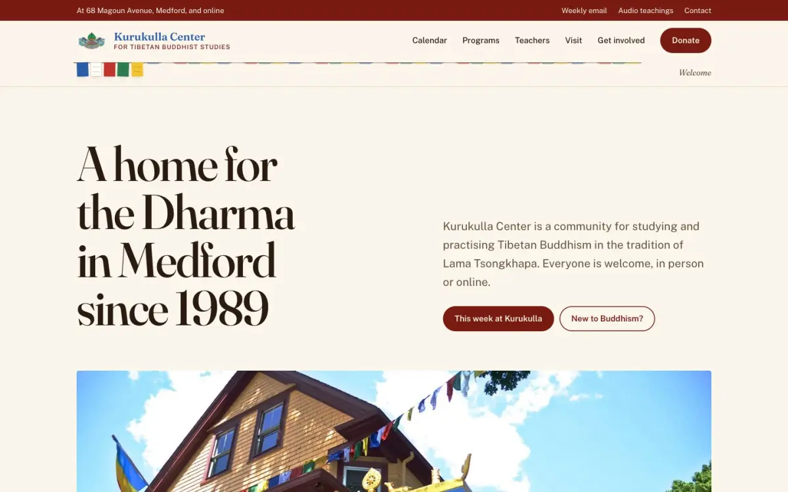
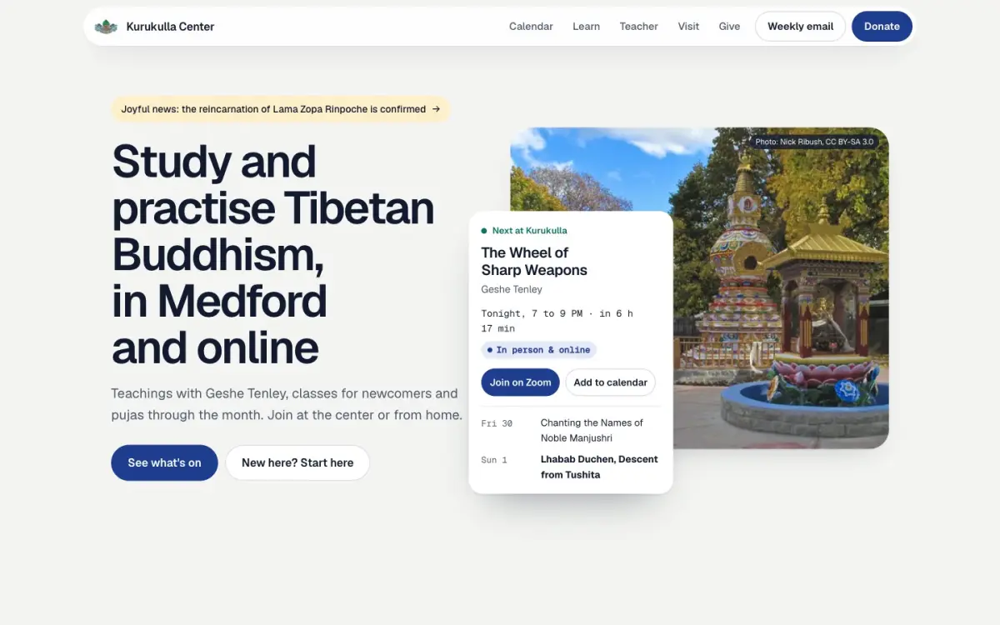
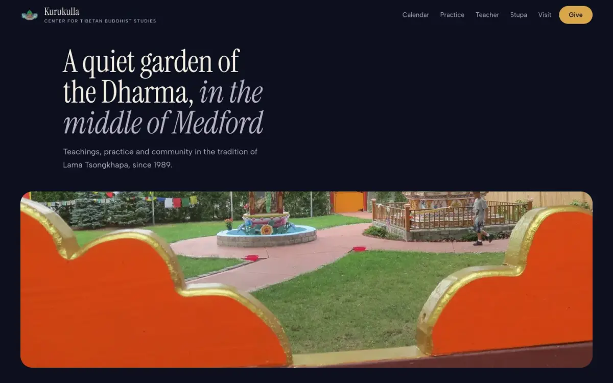
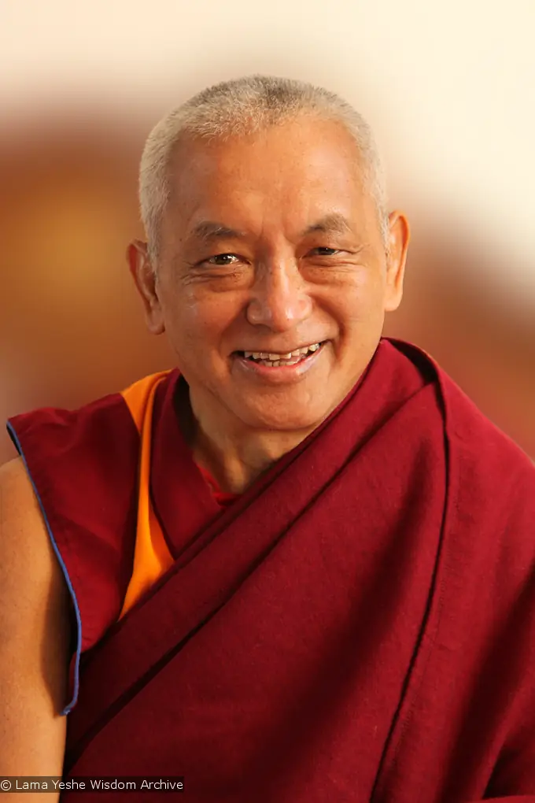
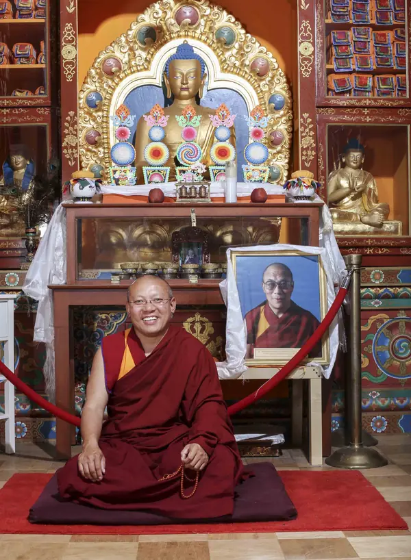
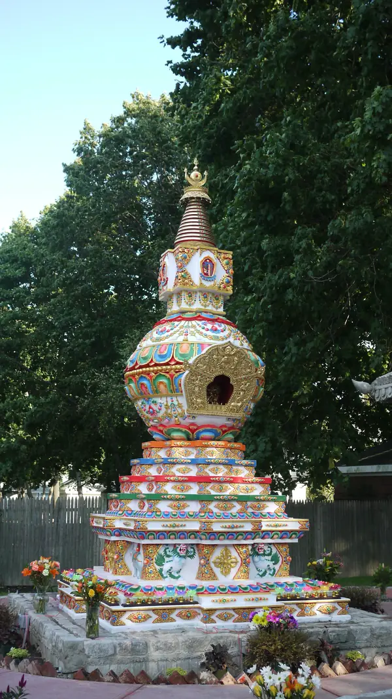

Kurukulla Center for Tibetan Buddhist Studies · Medford, MA
Three directions for kurukulla.org
Three ways the center's website could look and feel, each built as a full, working homepage with Kurukulla's own programme, words and photographs. Open them on your phone, scroll them, and see which one feels most like the yellow house on Magoun Avenue.
The weekly rhythm
“This Week at Kurukulla” is the heart of the current homepage and the weekly email. Every direction leads with it, kept up to date from one calendar.
Teacher, lineage, stupa
Geshe Tenley, the lineage of Lama Yeshe and Lama Zopa Rinpoche, and the Kalachakra Stupa for World Peace, in photographs good enough to carry them.
In person or online
Most teachings and pujas are hybrid, some are online only, prostrations are in person. Every event says how to join, everywhere it appears.
Dana, clearly
An all-volunteer center costing $8,000 to $9,000 a month. Membership and giving are explained plainly, close to where people decide.
The three directions at a glance
Each has its own palette, typography, layout and way of moving as you scroll. All three use the same real content, so the difference is only in how it feels.

Hearth
A printed feature about the yellow house. Warm paper, maroon and saffron, a serif to read slowly.

Clear Light
The programme as the product. Calm, light and practical, built like a well-made app for phones.

Sanctuary
An evening visit. Night blue and butter-lamp gold, and a scroll that walks you into the stupa garden.
What shaped them
We read the whole of kurukulla.org and its programme, and looked at how well-regarded event, community and editorial sites present a schedule and invite people in (via Mobbin and 21st.dev).
A day-by-day list of the week, with times, teachers and how to join. People already know it.
Week in A, planner in BCommunity events as a timeline grouped by day, so a week reads at a glance.
A and BA monthly and yearly toggle on membership, so the commitment feels as light as it really is.
Membership in A, giving in BVisit sections that pair one address, plain directions and a photograph of the actual door.
Visit in all threeAn image that opens from a rounded frame to full width as you scroll, so the first move feels like arriving.
Arrival in CA picture that holds while the story beside it moves on, changing as each chapter arrives.
Teacher in C, sticky columns in AVertical scrolling drives a sideways rail of cards, then hands back to the page.
Ways to practise in CPujas follow lunar days: Tara on the 8th, Guru Puja on the 10th and 25th, Medicine Buddha on the 15th.
The lunar dial in BDirection A · Warm and traditional
Hearth
Kurukulla as a printed feature. Chapters you read in order, from the welcome to the weekly programme, Geshe-la, the house and the stupa garden, with photographs set in their own columns and captioned.
#7A1B12#EDB23A#FBF6EC#F3EADA#2D5DA8#2B1A12Hero
A title page: the headline on warm paper, then the yellow house in a wide frame that drifts gently as you scroll.
Programme
“This week at Kurukulla”, day by day, exactly like the weekly email. The day name stays in view while its events pass; holy days are marked in saffron.
Signature: the prayer-flag line
Under the header hangs a line of prayer flags. As you reach each chapter, a set of five (blue, white, red, green, yellow) is raised. Tap a set to jump to its chapter.
Best if
The community should recognise the center at once, and the site should feel like the house: warm, unhurried, a little traditional.
Direction B · Modern and practical
Clear Light
The programme is the product. Light, calm and built like a well-made app: what is on next, a two-week planner, the lunar month, and a clear path for newcomers. On a phone it has a tab bar, like an app.
#1F3D8F#0B7363#F5B731#F4F5F2#E3E9F6#111A2EHero
The welcome beside a live card, “Next at Kurukulla”, with time, teacher, how to join and a countdown. It sits over the stupa garden photo but never covers the stupa.
Programme
A two-week planner: pick a day, filter for in person or online. Lapis is the wordmark's blue; jade means online.
Signature: the lunar dial
A dial of the Tibetan month that turns as you scroll, stopping at each coming puja with its real date: Lhabab Duchen, Tara, Guru Puja, Medicine Buddha, Lama Tsongkhapa Day.
Best if
Most visitors arrive on a phone and want to know what is on, when, and whether they can join from home.
Direction C · Immersive and contemplative
Sanctuary
An evening visit to the center. Night blue and the gold of butter lamps; a single, unhurried scroll from the street, through the garden, into the shrine room and out again, ending on the dedication.
#0B0F1E#121831#D9A54A#F3EDE1#5CC2B5#3E0F17Signature: through the cloud window
The homepage opens on the garden seen through an orange Tibetan cloud window. Scrolling opens the frame to full width and carries you through the window into the stupa garden. On a phone it arrives at the stupa, shown whole.
Programme
“Coming up” with large dates and the holy days in gold, then ways to practise as a gallery that moves sideways as you scroll.
Teacher and stupa
Geshe-la's photograph holds while his story moves on, changing with each chapter. The stupa is revealed from its base to its spire.
Best if
The site should feel like arriving at the center: quiet, beautiful, and different from any other center's website.
Teachers and holy objects, placed with care
Images of the Buddha, the stupa and our teachers are not decoration. These are the rules all three directions follow.



- Never cropped, never coveredThe stupa, Buddha images and teachers are shown whole. No text, buttons or cards sit over them; in B the live card only overlaps trees and lawn, and on phones it sits below the photograph.
- Lineage above the teacherLama Yeshe and Lama Zopa Rinpoche, the FPMT's founders, appear before Geshe Tenley, and His Holiness is named first in the tradition.
- High on the page, never at the feetNo holy images in footers or as background texture. The pages close on the dedication instead.
- Real photographs, creditedEvery photo is Kurukulla's own, from the current and the 2021 sites and the center's YouTube teachings. The two stupa photographs by Nick Ribush are credited under their licence.
- Gentle motionHoly objects move slowly or not at all. With “reduce motion” switched on, every scroll effect becomes a still page with the same content.
Side by side
All three cover the same content and work on phones. They differ in mood, in how much they change for regular visitors, and in build effort.
| A · Hearth | B · Clear Light | C · Sanctuary | |
|---|---|---|---|
| Feels like | A printed feature about the house | A calm, well-made app | An evening visit to the garden |
| Hero | Title page, then the house | Welcome beside “Next at Kurukulla” | Through the cloud window |
| Programme | This week, day by day | Two-week planner with filters | Coming up, with large dates |
| Signature | Prayer-flag chapter line | Lunar dial of puja days | Scroll into the stupa garden |
| Change for regulars | ●○○ small | ●●○ moderate | ●●● large |
| WordPress effort | ●○○ lowest | ●●○ medium | ●●○ medium |
| Photography needs | A few good photos per chapter | Works with what exists today | Benefits from a new evening shoot |
Next steps
A direction can be taken as it is, or combined. For example, B's planner works inside A, and A's prayer-flag line could hang over C.
- 1
Tell us what resonates
Which direction feels most like Kurukulla, and what you would borrow from the others.
- 2
One round of refinement
We refine the chosen direction with you and add the other pages: programs, teachers, the stupa, giving.
- 3
Build and hand over
A WordPress site your volunteers can update easily, with your calendar, membership and newsletter moved across.
We would be glad to talk it through: matt@mindfuldesign.me